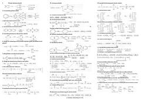

OROrganik kimyo reaksiyalari va moddalarni olish usullari bo'yicha qisqacha ma'lumotnoma.
Ushbu qo'llanma organik kimyo fanidagi turli xil moddalarni olish va ularning reaksiyalarini o'z ichiga olgan qisqacha ma'lumotnomadir. Unda kislotalar, aldegidlar, ketonlar, aminlar va boshqa organik birikmalarning sintez usullari ro'yxat ko'rinishida keltirilgan.